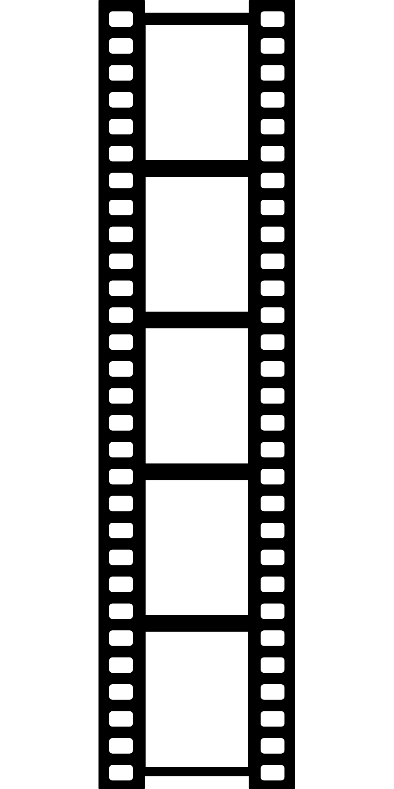

Filmes que Você Não Pode Perder Este Ano
 Imagem por OpenClipart-Vectors de PixabayO Festival de Cinema Internacional de São Paulo começou com grande entusiasmo, apresentando uma seleção impressionante de filmes de diversos gêneros e origens. Entre os destaques está o drama "Luz e Sombra", que já recebeu elogios da crítica por sua narrativa poderosa e performances excepcionais. O filme explora temas profundos sobre a luta interna de um artista em busca de redenção e é uma das apostas para os principais prêmios do festival.
Outro filme que está atraindo muita atenção é a comédia romântica "Amor ao Redor do Mundo", que promete conquistar o público com seu roteiro inteligente e personagens cativantes. A produção apresenta uma história de amor que se desenrola em várias cidades ao redor do mundo, oferecendo uma visão leve e encantadora das relações humanas.
Além dos filmes em competição, o festival também está oferecendo uma série de palestras e workshops com renomados cineastas e críticos. Esses eventos são uma oportunidade valiosa para os aspirantes a cineastas e entusiastas do cinema aprenderem mais sobre a indústria e se conectarem com profissionais do setor.